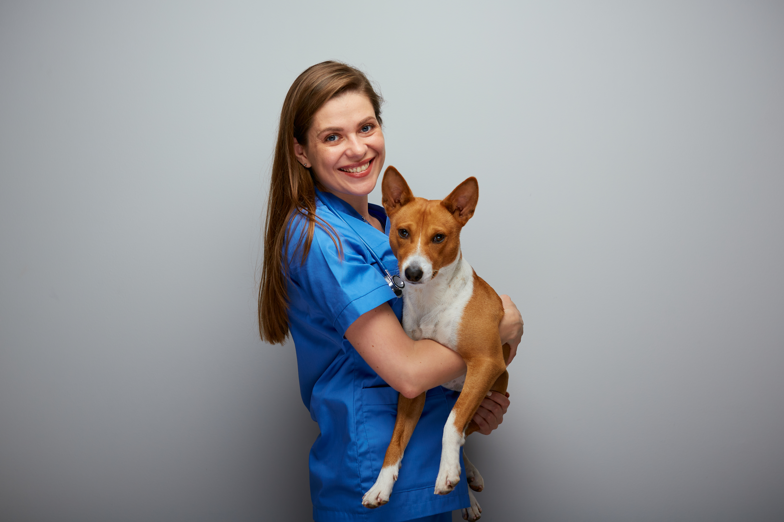

Our Dedicated Team

Dr Meridith Grey
Dr Meridith Grey
(BVSc MANZCVS - Surgery)
Dr Meridith Grey is a specialist in surgery with extensive experience in providing top-tier surgical care. Her dedication ensures your pets receive the best treatment possible.

Dr Mark Sloan
(BVSc)
With years of experience, Dr Mark Sloan focuses on ensuring the overall health and well-being of animals. He is a cornerstone of our veterinary practice.

Richard Webber
(Veterinary Nurse}
Richard is a skilled veterinary nurse who plays a crucial role in supporting our veterinarians and providing compassionate care for your pets.
April Kepner
(Receptionist)
April Kepner ensures a smooth experience for our clients with her warm and welcoming approach. She assists with appointments and inquiries to make your visit seamless.